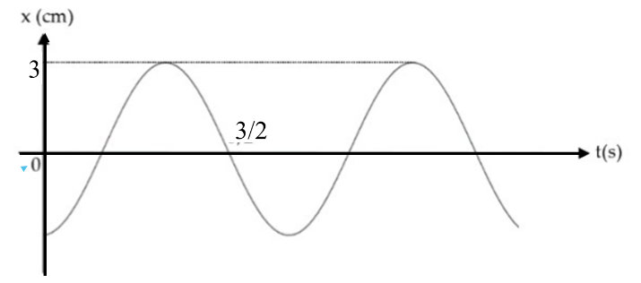
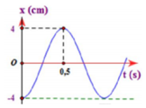
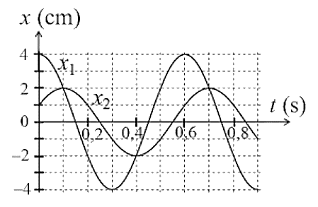
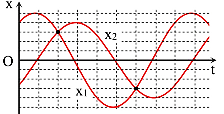
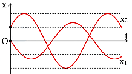

PHẦN III. Câu trắc nghiệm trả lời ngắn
Điền đáp số (có thể dùng dấu phẩy hoặc dấu chấm thập phân). Mỗi câu 0,25 điểm.
1

Một vật nhẹ dao động điều hòa có đồ thị li độ - thời gian như hình vẽ. Tần số dao động của vật là bao nhiêu Hz? (Kết quả lấy sau dấu phẩy 1 chữ số.) Hz
2
Đồ thị dao động điều hòa của một vật như hình vẽ. Tần số của vật dao động điều hòa có giá trị bao nhiêu Hz?

Hz
3
Một vật dao động điều hòa có đồ thị li độ phụ thuộc thời gian như vẽ dưới. Tính số dao động vật thực hiện trong 1 s.

4
Đồ thị li độ theo thời gian của 2 vật dao động điều hòa được mô tả như hình vẽ. Tại thời điểm $t=0{,}2$ s thì khoảng cách giữa 2 vật bằng bao nhiêu mét.

m
5
Hai vật A và B dao động điều hòa cùng tần số. Hình bên là đồ thị biểu diễn sự phụ thuộc của li độ $x_1$ của A và li độ $x_2$ của B theo thời gian $t$. Hai dao động A và B lệch pha nhau bao nhiêu rad? Lấy sau dấu phẩy 2 chữ số làm tròn.

rad
6
Cho hai con lắc đơn dao động điều hòa. Biết phương trình dao động của con lắc thứ nhất là $x=5\cos\left(10\pi t-\frac\pi6\right)$ cm. Con lắc thứ hai có cùng tần số, biên độ bằng chiều dài quỹ đạo chuyển động của con lắc thứ nhất, nhưng sớm pha $\frac\pi2$ so với con lắc thứ nhất. Khi con lắc thứ nhất có li độ 5 cm thì con lắc thứ hai có tốc độ bao nhiêu cm/s?
cm/s
7
Hai vật A và B dao động điều hòa cùng tần số. Hình bên là đồ thị biểu diễn sự phụ thuộc của li độ $x_1$ của A và li độ $x_2$ của B theo thời gian $t$. Hai dao động A và B lệch pha nhau bao nhiêu rad? Lấy sau dấu phẩy hai chữ số làm tròn.

rad